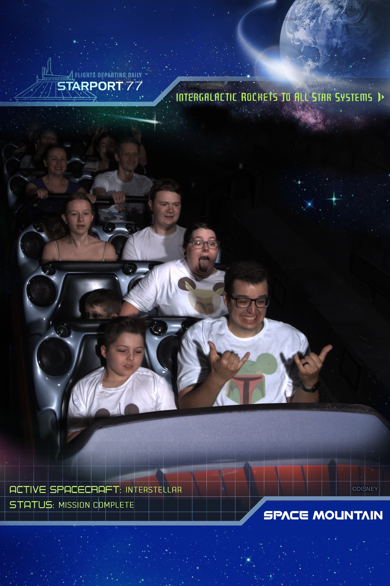
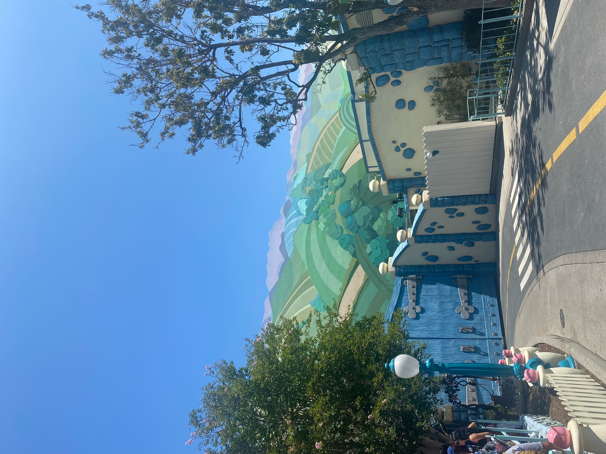
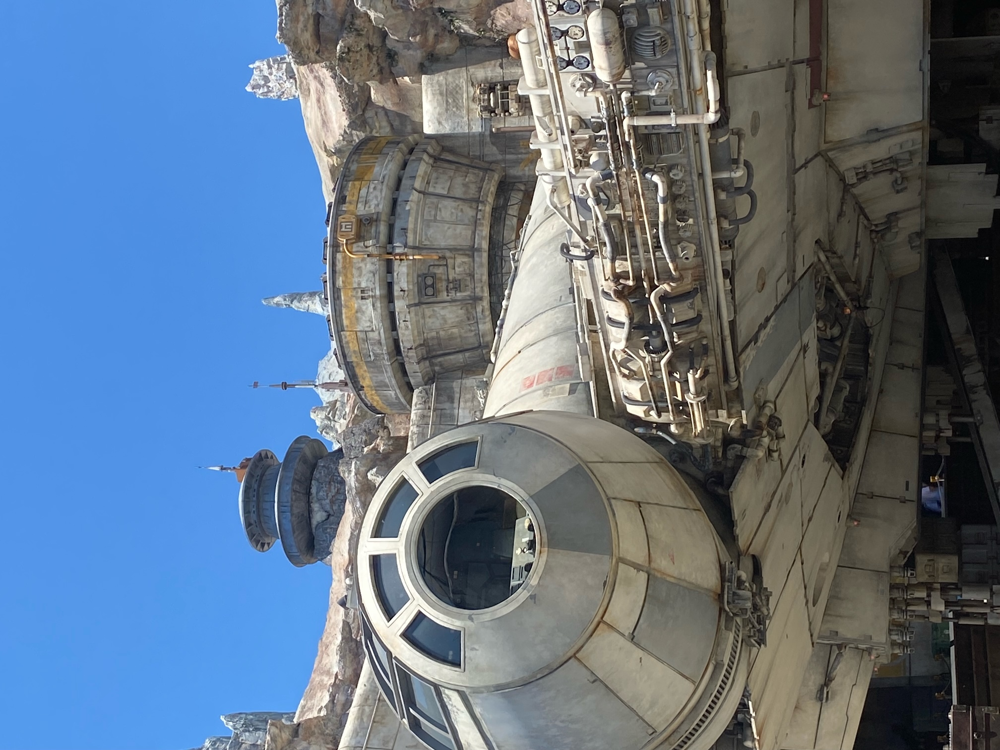
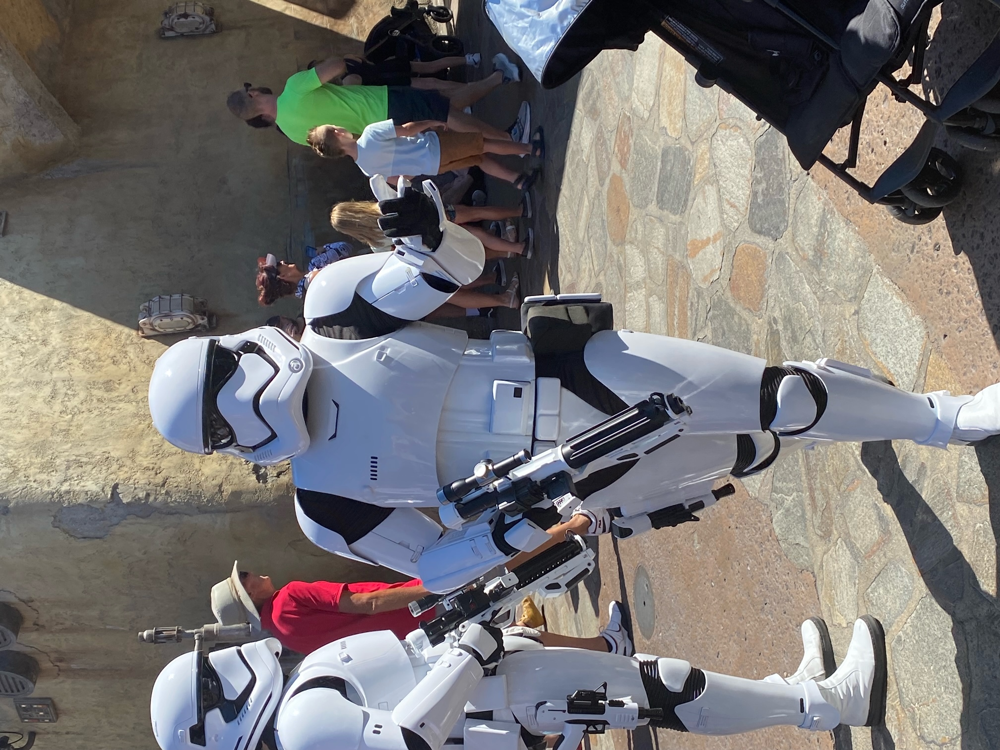
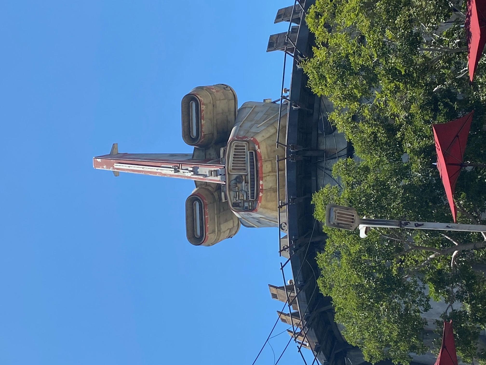
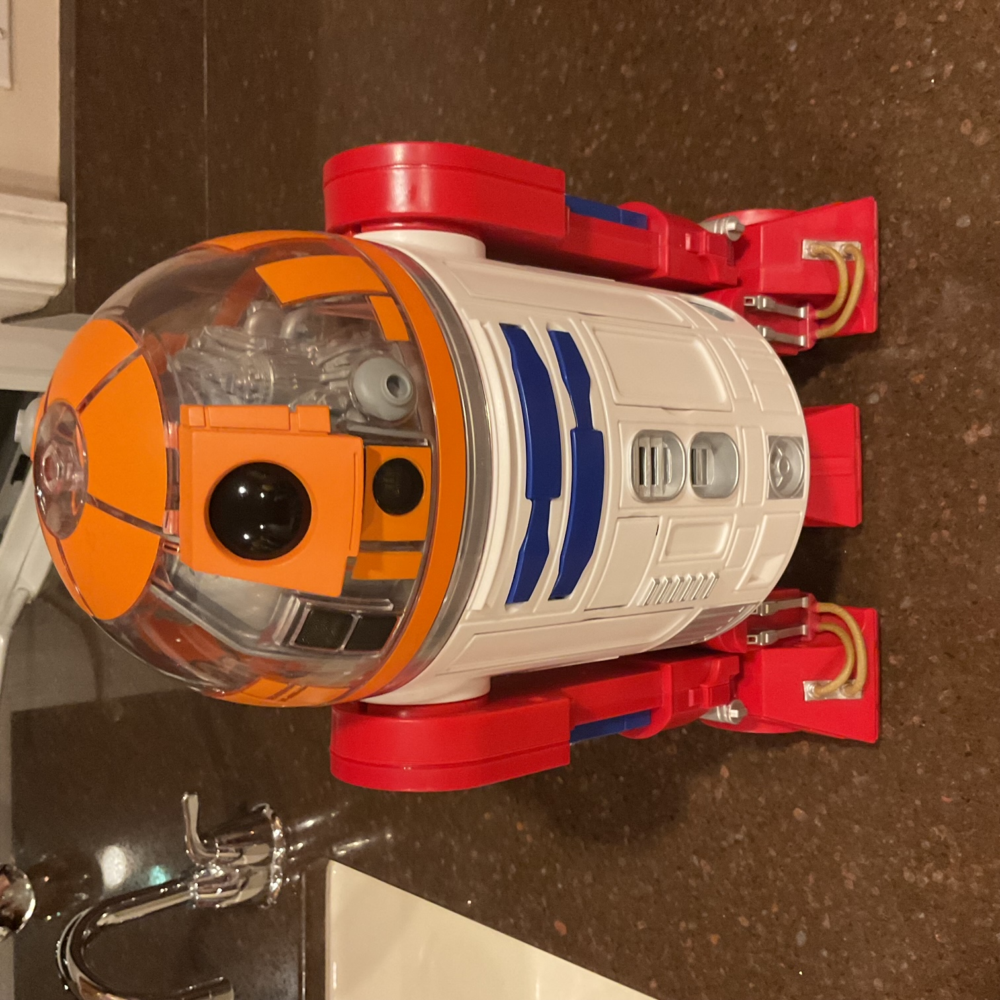

Our first theme park day was always going to be the main Disney park. In the modern world, you have to schedule exactly what fun to have so we had our park reservations.
The drive took longer than expected. Who could have predicted a massive urban area with crap roads would be busy when aiming to arrive in rush hour. Disney California is pretty compact so we got in quickly and went straight to the Emporium. Jake bought us all magic bands so that we interact with bits of the theme park and light up with the parades.
We had a ride plan that was slightly knocked off by our late start. We started with some Buzz Lightyear to ease us in (and it’s closed when we come next week). The Star Tours queue was respectable so we did that. We had great seats and I kept my eyes open throughout for the first time ever. Maybe the technology is improving.
The Space Mountain queue time was not respectable but rarely is so we joined it. There were some issues that stopped it for a bit so we waited a while. But the queue was fun with me and Jake playing some themed games while waiting. The ride itself was really good. Great music to build tension and dark enough to not quite be able to see what was coming next. I enjoyed it so much that I clapped and whooped at the end but, if I’m honest, that was mainly to embarrass Freya.

Jake loves Chip and Dale so we wandered up to Toon Town, which they don’t have in Paris or Orlando. It is aimed at small children, with a teeny train, a climbing play area, meeting Mickey and Minnie and a kiddie coaster. That kiddie coaster was our target. It was very lame but nicely themed and made Jake smile.

Pre-lunch ride was it’s a small world (lovely as always, with some Disney characters added, including a Woody that looked like it won third prize in a reception class drawing competition) then Pizza Planet to eat. Would have been quick and efficient if it weren’t for a GF pizza, which took ages (but very nice according to Alison). Although targeted for the pasta options, I sprinkled on some free packets of Parmesan and crushed peppers to get better value.
We walked up to Galaxy’s Edge, the Star Wars area. It was amazing, beautifully themed to within an inch of its life. Whichever dark corner you found or angle you looked from, it was like being in Star Wars. Mando and some First Order troopers were wandering around. The Millennium Falcon and other ships all looked great from all viewpoints.



The girls went shopping while the boys became bounty hunters. We took missions to find scum and villainy, using Jake’s Magic Band to guide us. It gave us the opportunity to explore all the nooks and crannies. Then we had the droid factory booked, which was even more amazing.
In what felt like being in a droid factory, Jake picked the parts for his R2 unit from a conveyor belt, then followed the instructions and used power tools to assemble and customise it, then tested it worked with the remote control. Great experience and the end product isn’t that horrendously priced.

We summoned the girls to ride Smuggler’s Run. The queue was long but took us behind the Falcon. The ride itself was spectacular. We walked through the Falcon corridors, perfectly themed and then into the cockpit. Freya was left pilot, who controlled left and right. I was right pilot doing up and down. Jake and Alison were the gunners pressing their shoot buttons a lot. We were giggling with excitement as we started and laughing at our combined ineptitude by the end.
We just missed the parade so rode Pirates of the Caribbean and Haunted Mansion before we decided it was too hot and we were too tired. Both rides were excellent (our new favourite Pirates). We decided to stop at Walmart nearby on the way home to get all the stuff we forgot yesterday and avoid rush hour in the other direction.
Healthy tea and unhealthy wine to finish a great start to the holiday. Just 8 more days of back-to-back theme parks. Good night!